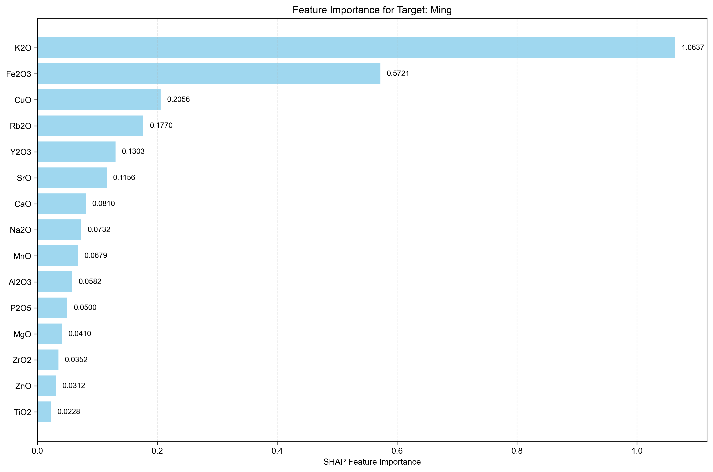
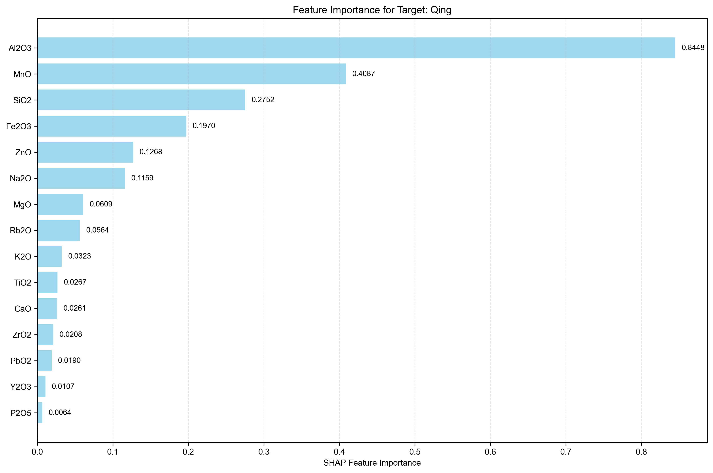
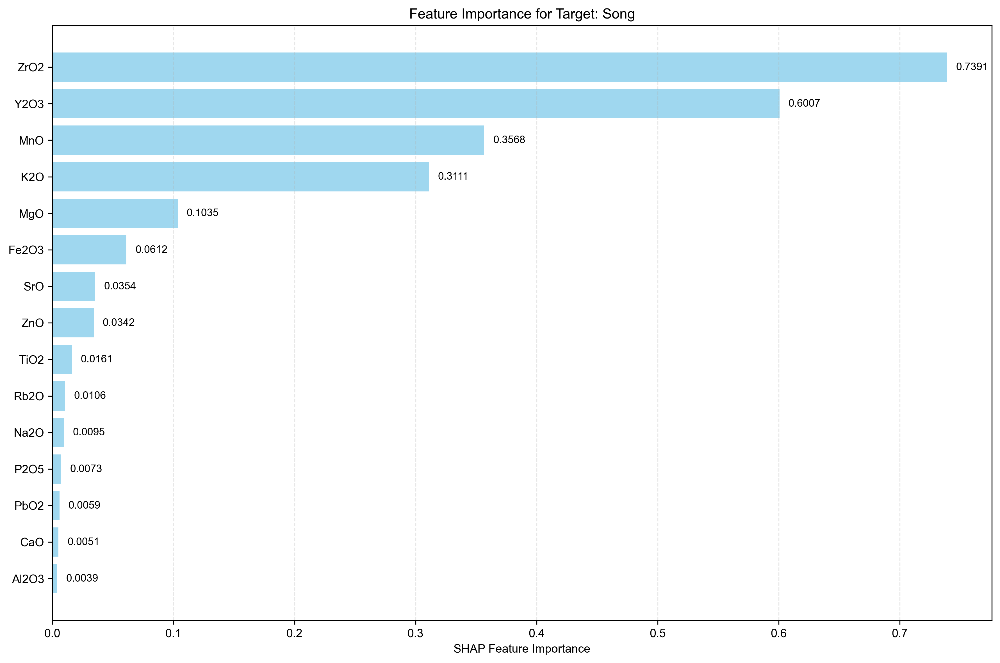
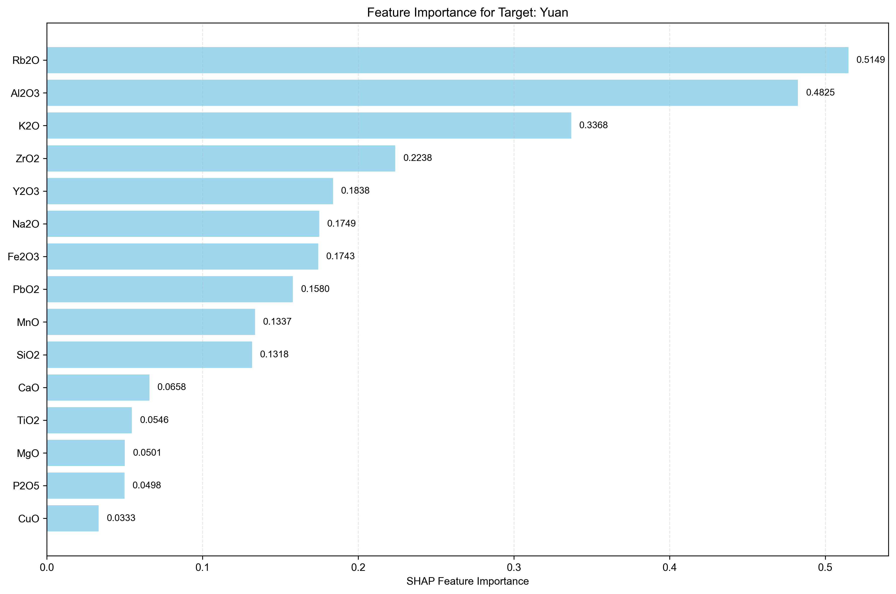

Analysis Method: SHAP
Number of Targets: 4
Generated on:
Targets Analyzed: Ming, Qing, Song, Yuan
| Rank | Feature Name | SHAP Importance | Relative Importance (%) |
|---|---|---|---|
| 1 | K2O | 1.0637 | 38.48% |
| 2 | Fe2O3 | 0.5721 | 20.69% |
| 3 | CuO | 0.2056 | 7.44% |
| 4 | Rb2O | 0.1770 | 6.40% |
| 5 | Y2O3 | 0.1303 | 4.71% |
| 6 | SrO | 0.1156 | 4.18% |
| 7 | CaO | 0.0810 | 2.93% |
| 8 | Na2O | 0.0732 | 2.65% |
| 9 | MnO | 0.0679 | 2.46% |
| 10 | Al2O3 | 0.0582 | 2.11% |
| 11 | P2O5 | 0.0500 | 1.81% |
| 12 | MgO | 0.0410 | 1.48% |
| 13 | ZrO2 | 0.0352 | 1.27% |
| 14 | ZnO | 0.0312 | 1.13% |
| 15 | TiO2 | 0.0228 | 0.82% |
| 16 | SiO2 | 0.0210 | 0.76% |
| 17 | PbO2 | 0.0187 | 0.68% |
| 18 | As2O3 | 0.0000 | 0.00% |

| Rank | Feature Name | SHAP Importance | Relative Importance (%) |
|---|---|---|---|
| 1 | Al2O3 | 0.8448 | 37.67% |
| 2 | MnO | 0.4087 | 18.23% |
| 3 | SiO2 | 0.2752 | 12.27% |
| 4 | Fe2O3 | 0.1970 | 8.79% |
| 5 | ZnO | 0.1268 | 5.65% |
| 6 | Na2O | 0.1159 | 5.17% |
| 7 | MgO | 0.0609 | 2.72% |
| 8 | Rb2O | 0.0564 | 2.52% |
| 9 | K2O | 0.0323 | 1.44% |
| 10 | TiO2 | 0.0267 | 1.19% |
| 11 | CaO | 0.0261 | 1.16% |
| 12 | ZrO2 | 0.0208 | 0.93% |
| 13 | PbO2 | 0.0190 | 0.85% |
| 14 | Y2O3 | 0.0107 | 0.48% |
| 15 | P2O5 | 0.0064 | 0.29% |
| 16 | As2O3 | 0.0058 | 0.26% |
| 17 | SrO | 0.0045 | 0.20% |
| 18 | CuO | 0.0044 | 0.20% |

| Rank | Feature Name | SHAP Importance | Relative Importance (%) |
|---|---|---|---|
| 1 | ZrO2 | 0.7391 | 32.05% |
| 2 | Y2O3 | 0.6007 | 26.05% |
| 3 | MnO | 0.3568 | 15.47% |
| 4 | K2O | 0.3111 | 13.49% |
| 5 | MgO | 0.1035 | 4.49% |
| 6 | Fe2O3 | 0.0612 | 2.65% |
| 7 | SrO | 0.0354 | 1.54% |
| 8 | ZnO | 0.0342 | 1.48% |
| 9 | TiO2 | 0.0161 | 0.70% |
| 10 | Rb2O | 0.0106 | 0.46% |
| 11 | Na2O | 0.0095 | 0.41% |
| 12 | P2O5 | 0.0073 | 0.32% |
| 13 | PbO2 | 0.0059 | 0.26% |
| 14 | CaO | 0.0051 | 0.22% |
| 15 | Al2O3 | 0.0039 | 0.17% |
| 16 | As2O3 | 0.0030 | 0.13% |
| 17 | SiO2 | 0.0026 | 0.11% |
| 18 | CuO | 0.0000 | 0.00% |

| Rank | Feature Name | SHAP Importance | Relative Importance (%) |
|---|---|---|---|
| 1 | Rb2O | 0.5149 | 18.31% |
| 2 | Al2O3 | 0.4825 | 17.16% |
| 3 | K2O | 0.3368 | 11.98% |
| 4 | ZrO2 | 0.2238 | 7.96% |
| 5 | Y2O3 | 0.1838 | 6.54% |
| 6 | Na2O | 0.1749 | 6.22% |
| 7 | Fe2O3 | 0.1743 | 6.20% |
| 8 | PbO2 | 0.1580 | 5.62% |
| 9 | MnO | 0.1337 | 4.76% |
| 10 | SiO2 | 0.1318 | 4.69% |
| 11 | CaO | 0.0658 | 2.34% |
| 12 | TiO2 | 0.0546 | 1.94% |
| 13 | MgO | 0.0501 | 1.78% |
| 14 | P2O5 | 0.0498 | 1.77% |
| 15 | CuO | 0.0333 | 1.18% |
| 16 | SrO | 0.0237 | 0.84% |
| 17 | ZnO | 0.0168 | 0.60% |
| 18 | As2O3 | 0.0029 | 0.10% |

• This report shows feature importance analysis for multi-target regression using SHAP method.
• Higher importance values indicate features that have more influence on the target prediction.
• Rankings are calculated independently for each target.
• Relative importance percentages show each feature's contribution relative to all features for that target.